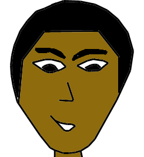
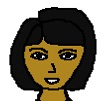
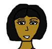
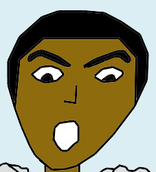

|  |
Name: Miguel
Description: The third oldest child. He's the second in command because of his power. He is the wielder of the Earth element. He's the second strongest of the children. His power is calm but destructive and his will to save his siblings makes his power grow. |
|  |
Name: Resa
Description: She is the second oldest of the children. She controls the Wind element. Her power can combine with the other children's power to increase the power of the attack. She is strong on her own, but her power is more of a support power. |
|  |
Name: Snook
Description: The youngest child born. Her power is the Water element. Though she is quiet, she can be quite the opponent. Even though she is young, her mental capacity is that of her older siblings which makes her powerful. |
|  |
Name: Tokan
Description: The oldest of the children. He's the leader of the children. He is the wielder of the Fire element. He is probably the strongest of the children since his anger fuels his fire within. His desire to protect everyone at any cost can be helpful and destructive. |